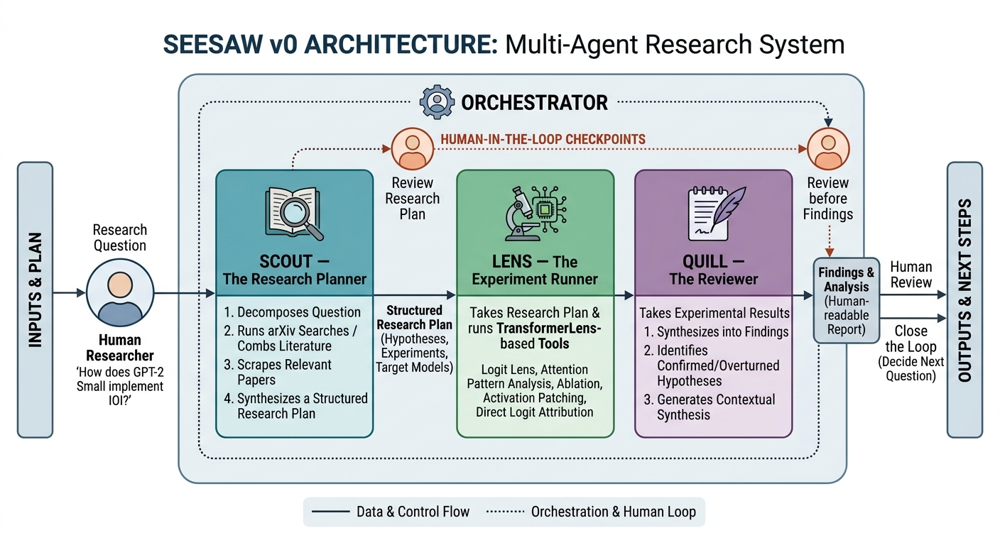

A multi-agent system that automates the hypothesis → experiment → critique loop in mechanistic interpretability research — plan, run, and critique, with a human approving every step.
A human researcher provides a research question. Three agents handle the rest — planning, execution, and review — with human-in-the-loop checkpoints between every stage, so nothing runs without approval.

A ReAct agent that searches arXiv and the web, then commits to a falsifiable hypothesis and a concrete experiment sequence for Lens to run.
A six-node LangGraph state machine that executes TransformerLens experiments from the plan, interprets each result, and can queue adaptive follow-ups.
Critiques the experiment bundle like a peer reviewer — flags methodological gaps and unsupported conclusions, and generates executable follow-up specs.
Five TransformerLens-based diagnostic and causal tools, each independently callable.
| Tool | Answers |
|---|---|
| logit_lens | Where across layers does the model commit to an answer? |
| attention_pattern | Which tokens does each head attend to? |
| direct_logit_attribution | Which components write the final prediction? |
| ablation | Is this component causally necessary? |
| activation_patching | Which layer and position carries the signal? |
A three-layer eval suite: graders, fixtures that validate the graders themselves, and tasks built from published ground-truth papers plus adversarial probes.
Nothing always-on. Scout, Quill, and Lens's graph run on a Modal CPU app; Lens's five experiment tools run on a Modal GPU app with per-second billing. A thin Next.js dashboard on Vercel queues jobs and reads state from a Postgres (Neon) job store — the dashboard never executes an agent directly.